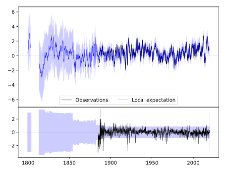
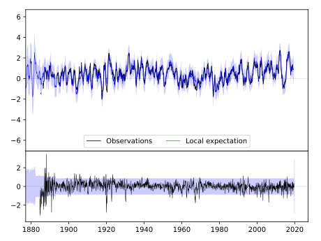
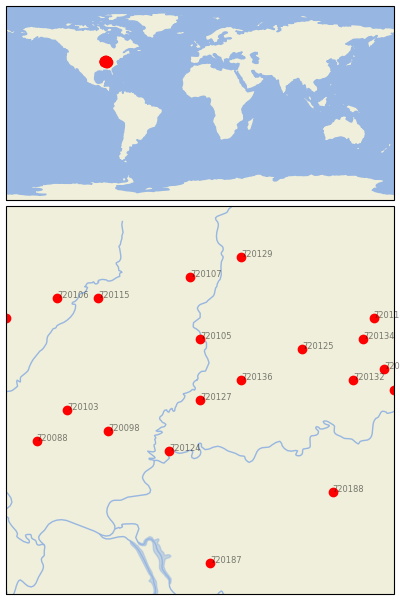

PRINCETON 1 W [USA]


| Neighbour | Name | Country | Distance | Lon/Lat | Years |
|---|
| 720127 | PRINCETON 1 W | USA | 3 | -87.6, 38.4 | 1884-2019 |
| 720136 | WASHINGTON 1 W | USA | 41 | -87.2, 38.6 | 1893-2019 |
| 720124 | MT VERNON | USA | 61 | -87.9, 37.9 | 1887-2019 |
| 720105 | PALESTINE | USA | 66 | -87.6, 39.0 | 1882-2019 |
| 720098 | MCLEANSBORO | USA | 85 | -88.5, 38.1 | 1882-2019 |
| 720125 | OOLITIC PURDUE EX FR | USA | 103 | -86.6, 38.9 | 1893-2019 |
| 720103 | MT VERNON 3 NE | USA | 113 | -88.9, 38.3 | 1879-2019 |
| 720132 | SALEM | USA | 132 | -86.1, 38.6 | 1884-2019 |
| 720107 | PARIS WTR WKS | USA | 133 | -87.7, 39.6 | 1886-2019 |
| 720115 | WINDSOR | USA | 140 | -88.6, 39.4 | 1885-2019 |
| 720088 | DU QUOIN 4 SE | USA | 146 | -89.2, 38.0 | 1886-2019 |
| 720188 | LEITCHFIELD 2 N | USA | 151 | -86.3, 37.5 | 1893-2019 |
| 720134 | SEYMOUR 2 N | USA | 154 | -86.0, 39.0 | 1887-2019 |
| 720129 | ROCKVILLE | USA | 159 | -87.2, 39.8 | 1862-2019 |
| 720133 | SCOTTSBURG | USA | 160 | -85.8, 38.7 | 1893-2019 |
| 720106 | PANA 3E | USA | 164 | -89.0, 39.4 | 1869-2019 |
| 720117 | CHARLESTOWN 5 NNW | USA | 165 | -85.7, 38.5 | 1893-2019 |
| 720118 | COLUMBUS | USA | 172 | -85.9, 39.2 | 1884-2019 |
| 720187 | HOPKINSVILLE | USA | 178 | -87.5, 36.8 | 1893-2019 |
| 720093 | HILLSBORO | USA | 187 | -89.5, 39.2 | 1893-2019 |